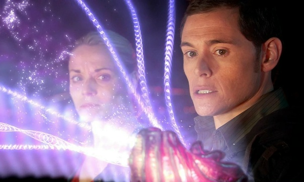

Весь 2-й сезон (13 серий)
Весь 2-й сезон (13 серий) |
A Day in the Death
Дата выхода: 27 февраля 2008
Формат: 50-минутный эпизод
| Варианты озвучек: | * Разные: смотрите по инструкции |
|---|---|
| Скачивание и просмотр: |
Оуэн разговаривает на крыше с женщиной, которая собирается совершить самоубийство. Он выражает свои мысли (или их отсутствие) по поводу своей новой жизни (или её отсутствие). Сможет ли миссия Торчвуда помочь его спасению, или придёт конец света?
